Concrete Curing
Concrete curing is a specific process applied to manage early-age behavior by maintaining adequate moisture and temperature conditions immediately after placement [6]. This management is critical because concrete pavements are significantly affected by temperature and moisture changes during the first 72 hours, which can induce stresses leading to curling, warping, or cracking if not properly controlled [6]. By mitigating excessive moisture loss and regulating thermal gradients, curing helps prevent the distresses associated with the weak solid state of early-age concrete [23], fostering cement hydration for a sufficient period to obtain design strength and maximum durability. Curing Compounds function as external surface membranes to retain moisture, whereas Internal Curing utilizes embedded reservoirs like lightweight aggregate or superabsorbent polymers to supply water from within the matrix [1], [2]. The VDOT Accelerated Curing Regime differs by employing specific thermal and chemical protocols to enhance durability in supplementary cementitious material concretes rather than simply maintaining ambient conditions [sections: Chemical Types and Classifications, Key Performance Properties and Metrics, Application Techniques and Equipment, Environmental and Weather Considerations, Advanced Curing Materials and Internal Agents, Specialized Concrete Applications, Monitoring and Testing Technologies] [sections: Introduction and Fundamental Concept, Internal Curing Agents and Mechanisms, Technical Basis and Material Science, Key Benefits: Material Properties and Durability, Implementation: Materials and Construction Requirements, Performance Evidence: Laboratory and Field Testing, Pavement Applications and Economic Viability, Case Study: Iowa Field Implementation, Research Directions and Future Applications, References] [sections: Procedure, Findings in Hooton & Vassilev 2012, Phase 3 Findings (Taylor & Wang 2014)] [3].
Sources (40)
Sub-concepts (3)
Methods
Curing methods fall into two categories (ACI Committee 308):
- Water-adding techniques — ponding, fogging, sprinkling, steaming, saturated coverings (burlap, cotton mats, sand, straw)
- Water-retaining techniques — sealing materials (plastic sheets, reinforced papers), liquid membrane-forming Curing Compounds
Longitudinal joint forming knives can eliminate extensive joint sawing by separating aggregates and leaving a weakened concrete cream plane, though they may require manual bullfloating to close gaps. [4]
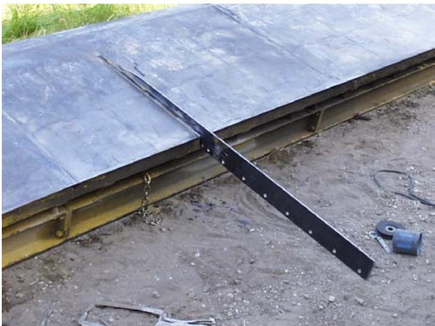
Longitudinal Joint Forming Knife [4]Synthetic fibers such as polypropylene monofilament (1 lb/yd³), fibrillated polypropylene (3 lbs/yd³), and structural fibers (3 lbs/yd³) can be introduced into concrete via hopper systems to control cracking. [4]
High subbase temperatures (e.g., reaching 100°F) can be mitigated by spraying water on the existing surface ahead of paving to allow evaporation cooling before concrete placement. [4]
Joint cleaning via high-pressure air blast is used to remove concrete dust from 1/8-inch wide joints when they are not sealed. [4]
The sorptivity test is the most sensitive method for detecting subtle microstructural changes in near-surface concrete caused by different curing materials and application techniques. [5]
 Test Procedures for Sorptivity Measurements [5]
Test Procedures for Sorptivity Measurements [5]
The single-operator standard deviation for ASTM C156 water retention testing is 0.13 kg/m², indicating high variability in test precision. [5]
Reducing curing temperatures from 70°F to 50°F more than doubles the set times for both binary and ternary cement concretes, whereas increasing temperatures from 70°F to 90°F reduces set times by only about 10%–15%. [6]
 Effects of curing temperature on initial set time of concrete [6]
Effects of curing temperature on initial set time of concrete [6]
Achieving a specific early-age strength in ternary cement concrete requires either extended curing duration at a constant temperature or higher curing temperatures for a fixed duration compared to binary cement mixes. [6]
Silica fume is typically used to replace approximately 5% to 15% of the cement in high-performance concrete, while a common replacement range for pavement concrete is about 4% to 10%. [7]
 X-ray diffactogram of silica fume (note the trace of SiC in the sample) [7]
X-ray diffactogram of silica fume (note the trace of SiC in the sample) [7]
Ground granulated blast-furnace slag is a predominantly glassy material that acts as a hydraulic cementitious constituent rather than a pozzolan, though its setting and hardening reactions proceed much more slowly than those of portland cement. [7]
In two-lift paving systems, waiting 30 to 60 minutes before placing the second lift helps prevent mixing of the two concretes while maintaining bond integrity. [8]
A two-lift concrete pavement configuration with a three-inch top lift on a nine-inch base lift, with dowels placed in the bottom lift, has demonstrated high success rates with no maintenance costs over extended service periods. [8]
 Two-lift paving in Austria (Source: http://www.walter-heilit-vwb.de/english/toechterg/wien.htm) [8]
Two-lift paving in Austria (Source: http://www.walter-heilit-vwb.de/english/toechterg/wien.htm) [8]
The chemical contraction of the stiffer top layer relative to the bottom layer creates stress intensities known as the “bimetallic” effect at the bonding interface between the two concrete layers. [8]
Capping lower-quality concrete on exposed edges by placing a wider top lift over a narrower bottom lift helps protect vulnerable areas and improves overall pavement durability. [8]
In thin whitetopping overlays less than four inches thick, synthetic fibers are recommended as a measure to retard surface material loss around cracks rather than preventing cracking entirely. This application allows for larger joint spacings in the overlay that can align with the underlying pavement’s joint pattern. [9]
For thin whitetopping overlays with depths between three and six inches, tie bars should be installed across longitudinal joints at 36-inch spacings and nailed directly to the existing asphalt concrete surface. This requirement addresses specific placement challenges associated with these intermediate overlay thicknesses. [9]
Curing operations for thin whitetopping overlays must remain in close proximity to the slipform paving machine due to the shallow overlay depth and rapid strength gain potential driven by changing weather conditions. Multiple maturity monitoring locations are recommended for each day’s placement to account for temperature variations across the pavement surface. [9]
Joint formation in thin whitetopping overlays should utilize early-entry saws equipped with 1/8-inch-wide blades, initiated when concrete reaches a flexural strength between 100 and 120 psi or when joint raveling ceases. The longitudinal joints must be formed closer to the slipform paver than is required for full-depth pavements. [9]
In thin whitetopping construction, transverse joints are typically sawed first at 15- to 20-foot spacings before intermediate joints follow, a sequence designed to prevent premature cracking during hot weather conditions. This sequential sawing approach is critical for managing thermal stresses in the shallow concrete layer. [9]
Dowel bar ripple, characterized by regular disturbances spaced approximately 20 feet apart with peak-to-trough elevation differences around 0.25 inches, is a significant source of pavement surface roughness that can be detected during the plastic concrete stage using profile measuring equipment. [10]
 Simulated profilograph trace, passing lane outside trace [10]
Simulated profilograph trace, passing lane outside trace [10]
Profile measuring devices such as the Ames Engineering RTP and GOMACO GSI can be mounted throughout the paving train to isolate specific sources of roughness, including dowel baskets, string-line tension issues, and mechanical float operations. [10]
Shrouds should be placed around profile measuring sensors during slip-form paving operations to prevent concrete and curing material splatter from damaging the equipment or adversely impacting measurement accuracy. [10]
Profile data collected during plastic concrete stages often contain elevated roughness content at wavelengths near three feet, which influences International Roughness Index (IRI) values but is not present in hardened concrete profiles. [10]
 Reduction in roughness by hand finishing [10]
Reduction in roughness by hand finishing [10]
The Ames LISA lightweight inertial profiler typically achieves distance-measuring accuracy of less than 1% when properly calibrated for tire pressure and ambient air temperature. [10]
String line disturbances have been identified as a factor that degrades pavement smoothness and can be detected by profile measuring equipment during active paving operations. [10]
Profile measurement devices can be used to evaluate pavement thickness by measuring the top of base materials in front of the slip-form paver and the finished concrete surface behind the paving operation. [10]
The RTP sensor requires adherence to a defined focal length range to ensure measurement accuracy during profile evaluation. [10]
The GSI device utilizes an operating range distance from the pavement surface specifically designed to aid in eliminating wind effects on its output. [10]
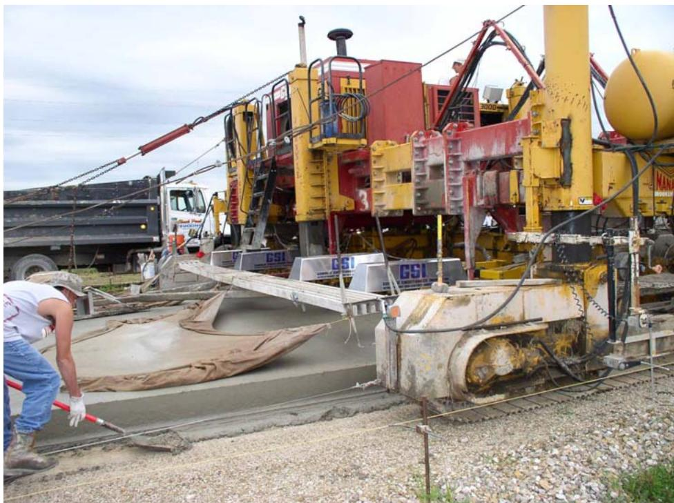
GSI arrangement over each wheel path (Arrangement 1) [10]Profile data collected during paving operations cannot be synchronized to hardened concrete profiles due to differences in wavebands and validity between the measurement devices. [10]
Longitudinal distance measurements made by inertial profilers can underestimate actual distance by more than 3% due to operator calibration errors. [10]
Leave-outs, defined as sudden changes in elevation found within a profile when the profiler was not operating over some distance, can compromise data quality and require exclusion from analysis. [10]
Profile measuring equipment can determine the need for additional operations to remove surface irregularities created by aggregates and texturing that increase roughness values. [10]
Sensors mounted directly to the paving machine on a truss extended behind the automated float can capture profile data at specific stages of the paving process. [10]
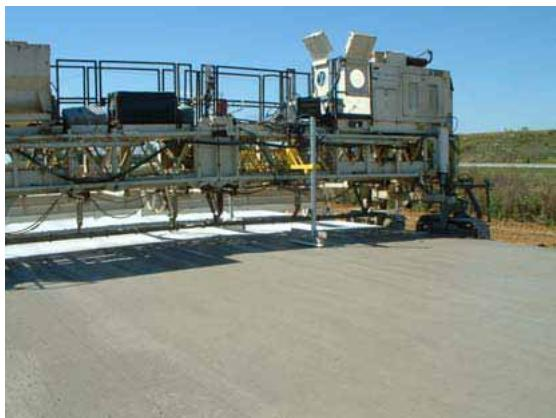
Sensors mounted to texture and curing machine Figure 9. Train configuration for the sensors mounted on the paving machine and on the curing and tining machines [10]The auto-float operation has been shown to cause measurable changes in pavement profile smoothness during the plastic concrete stage. [10]
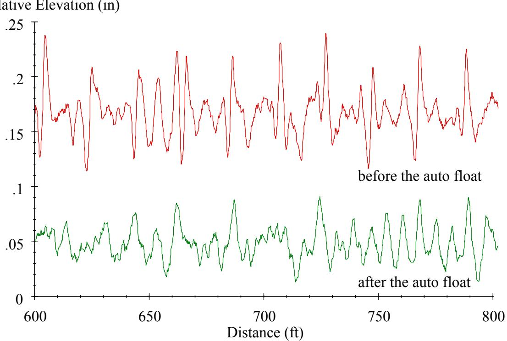
Change in profile caused by the auto-float [10]Exposed aggregate concrete pavements require a maximum water-to-cement ratio of 0.38 and a minimum cement content of 450 kg/m³ (758.5 lb./cu. yd.) to ensure the high-quality top layer necessary for durability and friction. [11]
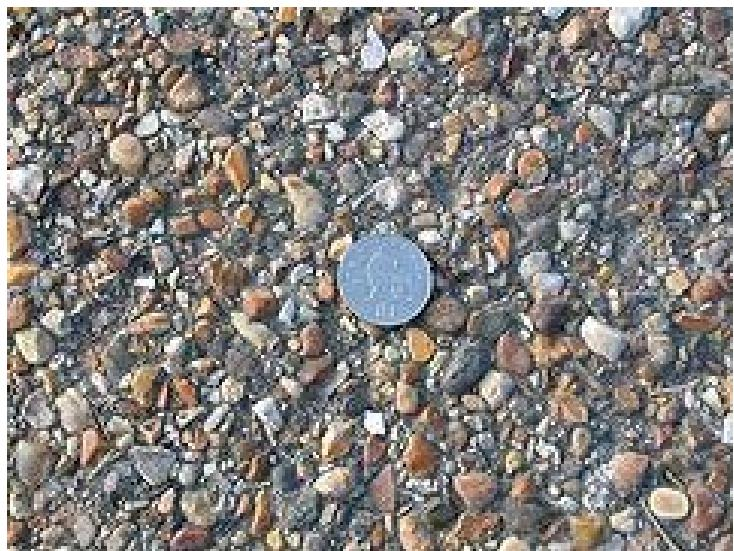
Finished exposed aggregate surface [11]The application of set-retarding agents to newly placed concrete allows the surface mortar to be brushed or washed away after approximately 24 hours, exposing durable aggregates while maintaining internal curing conditions. [11]
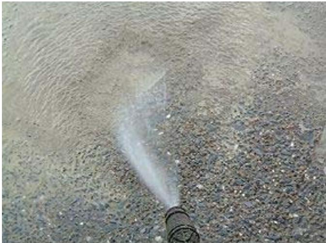
Surface mortar being washed away to expose aggregates [11]In exposed aggregate concrete pavements, the use of a super smoother during construction can increase texture depth up to 1.8 mm (0.07 in.), which may reduce noise emissions by decreasing megatexture compared to standard finishing techniques. [11]
Pervious concrete mixtures typically utilize a sand-to-total aggregate ratio of 5% to 10%, with beneficial fine sand passing the No. 8 sieve but retained on the No. 200, to enhance strength and workability in low water-cement ratio systems. [11]
In ultrathin portland cement concrete overlays on brick streets, curing compounds can be applied as a bond breaker to existing asphalt surfaces prior to placing new concrete, allowing for controlled debonding at specific interface zones. [12]
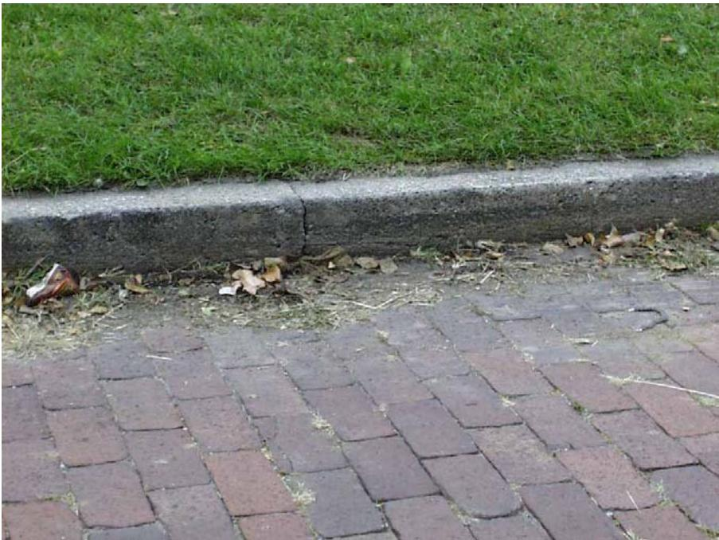
Existing pavement and bull-curb [12]Air void systems with total air content exceeding six percent consistently demonstrate acceptable bubble spacing factors, though this increase may result in a small reduction in compressive strength. [13]
 Entrained air in the concrete vs. spacing factor [13]
Entrained air in the concrete vs. spacing factor [13]
The use of high contents of slag and fly ash allows for longer flow distances and extended retention in flowability, which is particularly beneficial for underwater bridge footings. [14]
Thixotropy, a time-dependent behavior where viscosity decreases under shearing but recovers when shearing ceases, controls the timely shape-holding ability of self-consolidating slip-form concrete. [15]
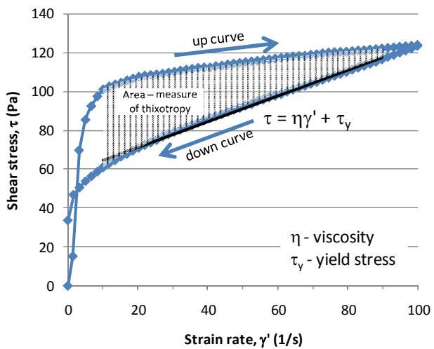
Typical paste flow curve for Brookfield rheometer [15]The IBB-yield torque for self-consolidating slip-form concrete ranges from 3 to 5 N-m, while the IBB-slope ranges from 3 to 7.5 N-m-s, reflecting lower viscosity compared to conventional pavement concrete due to lesser coarse aggregate content. [15]
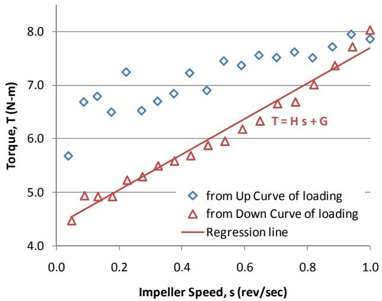
Typical concrete flow curve for IBB rheometer [15]The maximum green strength of freshly mixed self-consolidating slip-form concrete without compromising its compaction factor is 4 kPa, ensuring sufficient shape stability during slip-form paving operations. [15]
 Effect of mineral and chemical admixtures on flowability and green strength of fresh concrete with small-sized aggregates [15]
Effect of mineral and chemical admixtures on flowability and green strength of fresh concrete with small-sized aggregates [15]
Fly ash can be used up to 40% of portland cement in self-consolidating slip-form concrete mixtures to improve flowability, with the use of only Type I cement being encouraged. [15]
 Flowability and green strength for SFC, SCC, and SCCF mixtures [15]
Flowability and green strength for SFC, SCC, and SCCF mixtures [15]
The addition of water reducers and air-entraining agents reduces the thixotropy of cement-based materials, contrasting with nano-clay additions that increase yield stress, viscosity, and thixotropy. [15]
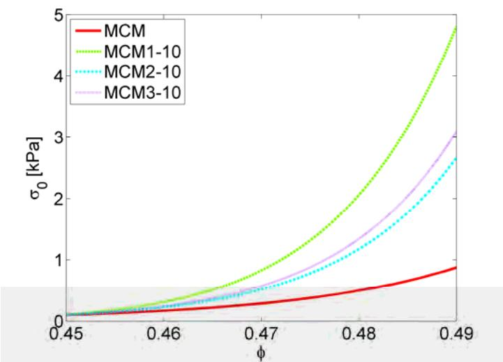
Compressive yield stress as a function of sediment volume fraction for all nano-clays at a dosage of 1.0% by mass of cement compared to the modified control mix [15]The Feret equation relates concrete strength to the absolute volumetric proportions of cement, water, and air, providing an alternative prediction model based on material volumes rather than just the water-to-cement ratio. [16]
For pervious concrete, plastic sheeting is the preferred curing method to prevent rapid moisture loss from both the exposed surface and bottom slab, though sandbags are required at edges to seal against wind-induced ballooning. This approach addresses the high porosity of the mix which makes it susceptible to desiccation and excessive surface raveling. [17]
Liquid membrane-forming curing compounds are generally unsuitable for pervious concrete because they only prevent surface moisture loss while failing to stop evaporation from within the highly porous matrix. Similarly, wet burlap cannot be applied until final set is reached to avoid washing cement paste from aggregate particles, which results in excess surface desiccation during the interim period. [17]
For thinner concrete overlay sections, multiple coats of curing compound can be applied in stages to ensure full coverage on steep profile grades or super elevated cross-slopes where saws might slide on heavily cured pavement surfaces. [18]
Proper curing of thinner concrete overlay sections requires application of the curing compound before any surface evaporation occurs, as these sections are particularly susceptible to rapid moisture loss due to their high surface area-to-volume ratio. [18]
Saw timing is especially critical for thinner concrete pavements which have a higher surface area to volume ratio, making early-entry saws particularly effective in preventing random cracking during the curing period. [18]
The VDOT accelerated curing regime, which requires seven days of moist curing at 23°C followed by 21 days of moist curing at 38°C, was found to cause severe scaling in slag-containing mixes when no drying period preceded pre-saturation. This outcome is attributed to the concrete surface reaching higher saturation levels during submerged curing in saturated lime water, which reduces resistance to freeze-thaw cycling. [3]
Finishing the surface by brushing according to ASTM C672 procedures has a measurable effect on early-age scaling results in concrete pavements. This mechanical finishing step interacts with the curing and conditioning phases to influence long-term durability against freeze-thaw cycles. [3]
Pervious concrete pavements with infiltration rates exceeding 1,000 in./hr (2,500 cm/hr) exhibit self-cleaning capabilities that allow them to flush larger amounts of soil through the surface over time. [2]
The inclusion of super absorbent polymers (SAP) in pervious concrete allows for a one-third to one-half reduction in conventional admixture dosages while maintaining equivalent performance due to the lubrication provided by the hydrated SAP gel. [2]
Immersion in de-icing liquids like Ossian Season One can improve the internal structure of concrete by creating an impermeable barrier at the surface, which slows both initial (1 minute to 6 hours) and secondary (1 to 6 days) water absorption rates compared to standard moist curing. [19]
Curing concrete in certain de-icing solutions can enhance electrical resistivity, serving as an indirect indicator of reduced permeability, whereas chloride-based compounds typically have little effect on this property compared to standard water curing. [19]
The VDOT accelerated curing regime requires seven days of moist curing at 73°F followed by 21 days of moist curing at 100°F, a procedure that can cause severe scaling in slag-containing mixes if no drying period precedes pre-saturation. [20]
A lower initial curing temperature extends the duration required for concrete to reach its peak hydration temperature, as observed in calorimetry tests where magnitude of temperature peaks is influenced by starting conditions. This thermal behavior must be accounted for when scheduling curing operations in cooler weather. [21]
In three-dimensional printed concrete, proper curing is essential to mitigate plastic shrinkage cracking and prevent structural deformation such as slumping between deposited layers. [22]
The evaporation of capillary water between aggregates generates negative pressure that causes concrete contraction, a primary mechanism for early-age shrinkage cracking when the bleeding rate falls below the evaporation rate. [23]
Autogenous shrinkage results from chemical hydration reactions consuming water within the concrete bulk, a process that wet curing methods cannot mitigate because they only supply surface moisture. [23]
The substitution of expansive Type K self-consolidating cement (SCC) reduces bleeding rates due to increased water demand for ettringite formation, yet its expansive nature counteracts plastic shrinkage cracking even with reduced bleed water. [23]
Expansive Type K SCC generates net compressive stress within restrained concrete elements by attempting to expand against formwork and reinforcement, which reduces permeability and mitigates the ingress of corrosive agents. [23]
Latex-modified concrete (LMC) overlays typically require a curing period of approximately 72 hours before traffic can be permitted, which is longer than conventional concrete due to the presence of polymer latexes that alter hydration kinetics. [24]
The presence of surface-active agents in polymer latexes used for concrete modification results in the development of large amounts of entrained air, necessitating the addition of air-detraining agents during mixing. [24]
Very-early-strength latex-modified concrete (LMC-VE) exhibits a higher rate of slump loss compared to other LMC types, requiring contractors to execute placement and finishing operations at an accelerated pace. [24]
Styrene-butadiene rubber (SBR) latex, a synthetic rubber commonly used for modifying cementitious systems, consists of spherical polymer particles ranging from 50 to 500 nm in size suspended in water. [24]
Latex-modified concrete overlays can be classified into conventional LMC, high early strength LMC (LMC-HE), and very-early-strength LMC (LMC-VE), with special cements utilized for the latter two categories. [24]
Regarding moisture management, if an impermeable membrane is used on a wet underlying layer, three inches of sand can be placed on top of the membrane to reduce moisture differential caused by excessive moisture accumulation at the bottom of the concrete during paving [25].
Waterproof sheeting used to protect retarder and concrete until aggregate exposure performs the same moisture-retention function as a curing compound [11], while automated one-pass paving equipment integrates independent processes such as finishing, texturing, curing, and jointing into a single operation to meet fast-track criteria [26].
Importance
Curing governs pore structure development, permeability, diffusivity, and absorption characteristics. Poor curing leads to:
- Plastic and drying shrinkage cracking
- Scaling and joint spalling
- Reduced strength and durability
The first 7 days are the most critical curing period.
Rain saturation before curing compound application can cause visible surface damage if the concrete has set enough to prevent re-tining. [4]
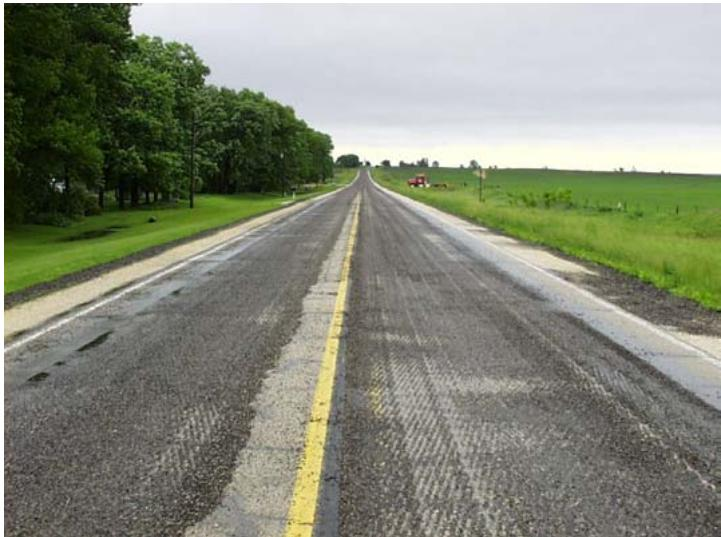
Scarified Pavement Surface [4]When concrete relative humidity falls below 80%, cement hydration may cease, making moisture retention critical for sustained strength development. [5]
Application of a curing compound significantly increases moisture content and degree of cement hydration while reducing sorptivity in the near-surface area of concrete. [5]
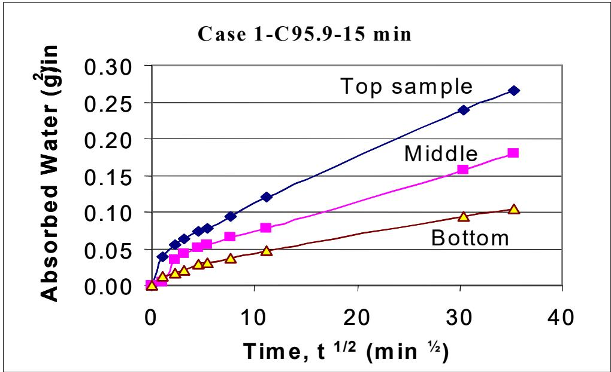
Typical Sorptivity Test Results [5]Concrete containing supplementary cementitious materials such as fly ash and slag exhibits slower early-age strength development at low curing temperatures, but this rate becomes comparable to ordinary Portland cement concrete when cured at high temperatures. [6]
The maximum heat of cement hydration decreases as the proportion of supplementary cementitious materials increases, which reduces the risk of thermal cracking in blended cement concretes compared to ordinary Portland cement. [6]
Increasing patch depth enhances concrete strength gain associated with the heat of hydration and maturity testing. [27]
Near-surface concrete strength development may benefit from both the compression effect of early traffic loading and cement hydration, as proper compression from appropriate traffic loads can facilitate early strength development by improving concrete density before it hardens. [27]
Maturity testing enables continuous highway use during one-lane thin whitetopping construction by accurately determining strength gain, while two-lane construction methods can reduce traffic closure times to less than 20 hours for passenger vehicles and approximately 30 hours for construction trucks. [9]
Proper curing in thin whitetopping overlays requires maintaining close proximity to paving operations due to rapid strength development influenced by existing pavement surface temperatures. The shallow depth of the overlay accelerates hydration rates, making timely moisture retention critical for preventing plastic shrinkage cracking. [9]
The coefficient of thermal expansion (CTE) for the concrete mixture was measured at 1.044E-5 ε/°C using field-fabricated samples tested at 56 days, providing a critical parameter for modeling early-age curling and warping behavior. [28]
The use of smaller maximum aggregates in exposed aggregate concrete pavements, such as 20 mm compared to 32 mm, has been shown to provide larger noise reductions while maintaining durability standards. [11]
Pervious concrete pavements can achieve significant freeze-thaw durability improvements through the use of polymer additives and higher cement content, addressing initial failures where ice formation at pore entrances caused raveling and localized cracking. [11]
Pervious concrete pavements with 19% porosity have demonstrated sound reduction capabilities of 5 dBA, offering a conservative but effective noise mitigation strategy for high-volume traffic facilities. [11]
Plastic surface cracks resulting from poor curing create pathways for water intrusion, which subsequently feeds deterioration mechanisms such as freeze-thaw damage and alkali-silica reactivity. [13]
Ternary blended cement with GGBFS and fly ash can produce concrete with a low adiabatic temperature rise of 47.9°C, representing about a 75% reduction compared to normal PCC mixtures. [14]
A 25% replacement rate of fly ash increases the setting time and greatly lowers the heat of hydration, while silica fume addition in such mixtures further reduces concrete permeability. [14]
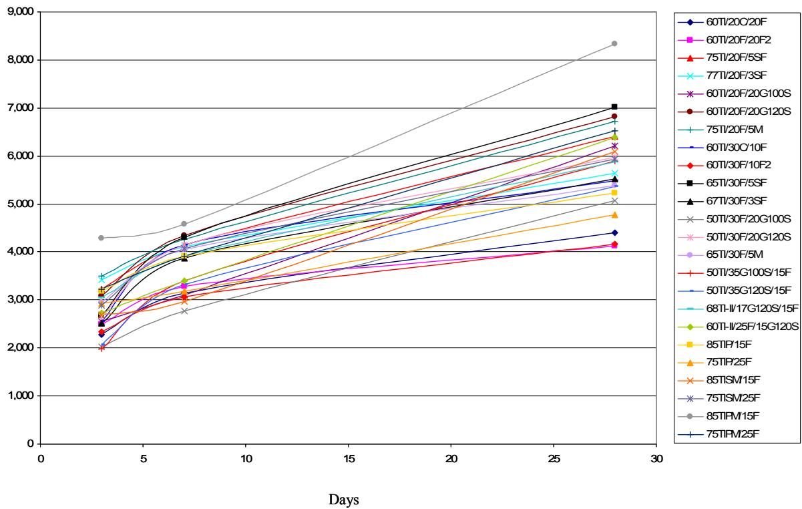
Strength gain for mortar mixtures containing Class F fly ash [14]Poor curing of GGBFS and fly ash mixtures produces poor air permeability results, demonstrating that proper moisture retention is critical for achieving durability in concrete containing these supplementary cementitious materials. [14]
Silica fume concrete shows the greatest reduction in chloride penetration depth compared to GGBFS and fly ash concretes, with silica fume outperforming all other mixtures even under limited curing conditions. [14]
Self-consolidating slip-form concrete (SFSCC) exhibits noticeably higher porosity and rapid chloride ion permeability at 28 days compared to conventional pavement concrete, though these properties become comparable at later ages due to the extensive use of supplementary cementitious materials. [15]
Under laboratory drying conditions (23°C ± 2°C and 50% ± 4% relative humidity), SFSCC demonstrates similar or slightly higher compressive strength than conventional concrete but exhibits noticeably higher shrinkage at a given age. [15]
The addition of 2% nano-clay materials by weight of cementitious materials affects shrinkage differently: Actigel and Concresol increase drying shrinkage, whereas Metamax decreases it. [15]
Shrinkage reducing agents effectively reduce the shrinkage of self-consolidating slip-form concrete, providing a mitigation measure for the higher shrinkage tendencies inherent in these mixtures. [15]
The addition of nano-clay materials such as Actigel and Metamax slightly increases autogenous shrinkage, while Concresol decreases it in self-consolidating slip-form concrete mixtures. [15]
The ultimate drying shrinkage for a typical Iowa PCC mix (C-3WR-C20) can be predicted as 450 microstrain with the time to reach 50% of that value occurring at approximately 32 days based on short-term measurements. [16]
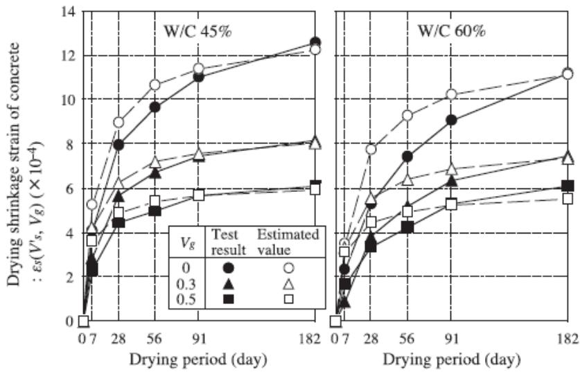
Time-dependent changes in drying shrinkage strain for concrete [16]The elastic modulus of typical Iowa concrete has been measured at approximately 4.82 ± 0.28 x 10^6 psi, which is significantly higher than standard MEPDG default values. [16]
The limiting water-to-binder ratio below which air entrainment is unnecessary for freeze-thaw durability is determined to be 0.26 for Type IP cement and 0.19 for concrete containing Type I cement with Class C fly ash. [29]
Concrete made with Type I cement and Class C fly ash requires a minimum 28-day compressive strength of 70.7 MPa (10,246 psi) to be considered freeze-thaw durable without air entrainment, while concrete utilizing Type IP cement must reach 82 MPa (11,880 psi). [29]
In non-air-entrained concrete, rapid chloride ion permeability must be maintained at or below 608 Coulombs for Type IP cement mixes and 185 Coulombs or less for mixes containing Type I cement with Class C fly ash to ensure adequate freeze-thaw durability. [29]
The Abrasion Index (AI) is calculated as the ratio of average abraded mass loss for a specific sample divided by the average for a control mixture cured without any method. This metric quantifies surface durability against mechanical wear, such as snow-clearing operations, which is critical for pervious concrete applications in cold climates. [17]
Pervious concrete durability is directly impacted by in-situ density, which must be maintained within ±80 kg/m³ (5 pcf) of the design unit weight to ensure adequate surface particle raveling resistance and freeze-thaw performance. Variations in compaction effort during placement significantly influence the final abrasion resistance independent of mixture proportions. [17]
A direct relationship exists between increased slag content and concrete surface scaling when specimens are exposed to the ASTM C672 testing procedure, with the bulk of scaling occurring during the first 15 cycles before tapering off. In contrast, mixes subjected to the modified BNQ test exhibited only small amounts of scaling during initial cycles, though scaling accelerated after that point for higher slag contents. [3]
The use of insulated slabs to achieve one-dimensional freezing drastically reduces deicer scaling by providing lower temperature gradients that reduce crack formation in ice. This method also reduces hydraulic pressures due to slower freezing rates, allowing more time for water to escape from capillaries into nearby air voids. [3]
Concrete mixes that experienced more than 2 mm of carbonation performed poorly regarding deicer scaling resistance. Carbonation depth was observed to increase with slag content, while chloride penetration depth decreased in the same mixtures. [3]
The modulus of elasticity for pervious concrete decreases linearly as void content increases, dropping from approximately 3.6 million psi (24,800 MPa) at 25% voids to 1.5 million psi (10,300 MPa) at 40% voids. [2]
The average surface resistivity of cast samples at 56 days was recorded at 26.8 kohm-cm, indicating a desirable low chloride ion penetrability classification for concrete mixtures containing high fly ash content. This value demonstrates that while high-volume fly ash mixes may take longer to achieve peak resistivity, they continue to improve over time. [21]
The anisotropic mechanical behavior of printed concrete results in significantly lower compressive strength when loaded parallel to the filament direction compared to perpendicular loading, a phenomenon attributed to potential buckling of the filaments under compression. [22]
Printed concrete specimens exhibit higher flexural strength than conventionally mold-cast samples regardless of loading direction, likely because the extrusion process densifies the mixture. [22]
Key references
- ACI 308 — Standard Practice for Curing Concrete
- ASTM C309 — Standard Specification for Liquid Membrane-Forming Compounds for Curing Concrete [5]
Maturity Monitoring
The TEMP System employs modified iButton sensors that record up to 2,048 temperature values at uniform intervals (e.g., every 5 minutes) and log events where temperatures exceed user-programmable limits. [4]
The Schmidt hammer is capable of monitoring strength gain over time in concrete pavement patches or pavement construction, though further development is needed to establish a reliable relationship between hammer rebound and actual concrete strength. [27]
For a given patch thickness and opening time, patches made with M4 mix do not display significantly higher rebound numbers than patches made with C4 mix at the same age after placing. [27]
The reliable maturity test method determines opening times to traffic versus achieved flexural or compressive concrete strength. [27]
Ultrasonic pulse velocity measurements indicate that the set time for concrete occurs between 5 and 8 hours, offering a non-destructive method to monitor early-age hydration progress. [28]
Linear variable distance transducers (LVDTs) are installed at strategic locations, including slab corners and mid-slab free edges, to measure absolute vertical slab movement caused by curling and warping. [28]
Stainless steel discs attached to the pavement surface are used with DEMEC calipers to measure relative joint opening and closing movements during diurnal temperature cycles. [28]
The maturity method is utilized to determine the precise time for opening concrete pavements to traffic, replacing fixed waiting periods with strength-based criteria. [12]
Calorimetry tests can differentiate the heat evolution of mortars made with different materials and subjected to different curing conditions, allowing for the prediction of mortar set time and early-age strength up to two days. Heat indexes derived from the first derivative and area under the calorimeter curve characterize these features. [30]
Heat indexes related to the first derivative of the calorimeter curve and the area under the curve are able to characterize mortar features and predict set time and early-age strength up to two days. These metrics provide insight into thermal cracking risk when incorporated with predictive software like HIPERPAV. [30]
Incorporating calorimetry test results with predictive software like HIPERPAV provides insight into the risk of thermal cracking in field concrete by capturing heat of hydration, climatic conditions, pavement geometry, and construction procedures. This approach replaces typical cement characteristic values with actual material-specific heat evolution data. [30]
The derivative of the semi-adiabatic temperature curve is used to determine setting time, where the maximum of the first derivative correlates to final set and the maximum of the second derivative correlates to initial set. This method allows for forecasting set times directly from heat evolution data. [30]
Semi-adiabatic calorimetry tests using concrete samples provide more accurate pavement temperature predictions in modeling software than isothermal tests because the semi-adiabatic condition better replicates in-situ field temperatures compared to constant laboratory conditions. [31]
Simple isothermal calorimetry tests can identify a second heat evolution peak associated with fly ash hydration in concrete mixes, a feature not generally observed in AdiaCal or IQ drum semi-adiabatic tests. [31]
Testing and curing temperatures exert a more significant influence on concrete calorimetry parameters, such as thermal set time and the area under the heat evolution curve, than variations in water reducer or fly ash dosages. [31]
Robust testing methods involving 50% increases or decreases in water reducer and fly ash dosages can establish acceptable heat evolution boundaries, allowing field engineers to evaluate calorimetry results against defined limits. [31]
The Nurse-Saul function assumes a linear relationship between the rate of strength development and temperature, while the Arrhenius function assumes an exponential relationship. [32]
High-alkali environments and extreme moisture content can cause direct failure of MEMS digital humidity sensors during concrete paving. [32]
Calorimetry curves can be used to predict initial set times using the 20 percent fraction method, which correlates well with initial set measurements derived from ultrasonic pulse velocity (UPV) approaches. This thermal measurement technique allows for early-age hydration monitoring without relying solely on traditional penetration resistance methods. [21]
The IRD Concrete Maturity Monitor is a compact tag containing a thermometer and memory that records temperatures every half hour by default, with data transmitted via a remote transmitter. [4]
Concrete can be opened to local traffic at a flexural strength of 350 psi and to construction traffic at 500 psi as determined by maturity probes. [4]
Internal Curing
Internal curing utilizes lightweight aggregates to release stored water, which mitigates autogenous shrinkage and self-desiccation in low water-cement ratio mixtures while ensuring more complete hydration of cementitious materials. This method results in a less permeable, stronger, and more durable pavement structure. [26]
Internal curing is a specific technique within concrete curing that addresses water consumption throughout the bulk of the mixture by utilizing materials such as saturated lightweight aggregates or superabsorbent polymers [23]. These embedded agents function as internal water reservoirs, releasing stored water directly into the cement paste during hydration to ensure even distribution and reduce cracking risks [34]. This process effectively prolongs cement hydration while potentially decreasing the overall density of the concrete structure [33].
Dry aggregate at the time of batching deprives cement particles of water needed for extensive hydration, compromising both strength and porosity. Diligent wetting of stockpiles can saturate highly absorptive aggregates to provide internal curing benefits that promote hydration beyond the normal curing period. [13]
A super absorbent polymer (SAP), specifically a crushed crystalline partial sodium salt of cross-linked polypromancic acid rated for 2,000 times its weight in water absorption, can be incorporated into pervious concrete to hold curing water and provide sacrificial moisture for evaporation. [2]
Replacing 20% of fine aggregate by mass with lightweight fine aggregate (LWFA) reduces the rapid chloride permeability testing result by approximately 10%, which corresponds to a lower diffusion rate at 28 days compared to conventional concrete. [1]
Internal curing with LWFA increases the ‘m’ term, a parameter modeling chloride transfer over time, from 0.47 in control sections to 0.52 in internal curing sections, indicating reduced diffusivity. [1]
Internal curing extends the hydration period from 25 years in conventional concrete to 27.5 years in LWFA mixtures containing supplementary cementitious materials. [1]
Service life predictions indicate that internal curing with LWFA can extend concrete service life by approximately 20 years compared to conventional mixtures. [1]
Lightweight fine aggregates must be soaked for 48 hours and drained overnight before mixing to ensure they are saturated enough to provide internal curing water without altering the effective water-to-cement ratio. [1]
High-performance concrete utilizing lightweight fine aggregates (LWFAs) for internal curing can achieve a 28-day average compressive strength of 6,870 psi while simultaneously reducing the beam weight by approximately 5% compared to conventional concrete mixes. [33]
Internal curing with LWFAs results in a surface resistivity of 13.90 kΩ-cm, which falls within the moderate range for chloride ion penetration resistance according to AASHTO TP 95 standards. [33]
Internal curing with prewetted lightweight aggregate reduces autogenous shrinkage and plastic shrinkage cracking while mitigating alkali-silica reaction (ASR) damage through dilution, gel accommodation space, and altered pore solution composition. This method also improves freeze-thaw performance without compromising strength compared to conventional concrete. [34]
Internal curing has been successfully implemented in full-scale bridge decks across multiple states, including Illinois, Indiana, New York, and Utah, demonstrating reduced cracking and extended service life. Field trials are also evaluating its use in continuously reinforced concrete pavement (CRCP), whitetopping, ultra-thin whitetopping (UTW), jointed plain concrete pavement (JPCP), and concrete patches. [34]
The application of internal curing in high early-strength concrete pavement patches provides reduced built-in stress from restrained shrinkage and increased water availability for hydration after the patch is covered with curing compound and opened to traffic. This dual benefit enhances durability in repair applications. [34]
Internal curing can enable thinner continuously reinforced concrete pavement (CRCP) sections by reducing built-in stresses associated with moisture gradients. Similarly, it is being investigated for whitetopping and ultra-thin whitetopping applications to mitigate curling and restrained shrinkage stresses. [34]
Quality control for prewetted lightweight aggregate used in internal curing can be performed using centrifuge methods or paper towel techniques to determine moisture content, ensuring the aggregate is saturated enough to provide internal water without altering the effective water-to-cement ratio. [34]
The absorption capacity of superabsorbent polymers (SAPs) intended for use in internal curing can be assessed using a recommended standard test method for the absorption of SAPs in Portland cement-based concrete. This testing ensures the polymer can effectively hold and release water during hydration. [34]
Internally cured concrete exhibits similar workability, strength development, and mechanical properties to conventional concrete but with reduced stress development and cracking. It also demonstrates improved durability characteristics due to more complete hydration and reduced fluid transport pathways. [34]
Superabsorbent polymers (SAPs) can mitigate plastic shrinkage cracking by replacing water lost at the surface through evaporation, with their efficiency depending on factors such as the water-to-binder ratio and external environmental conditions. [35]
The addition of SAPs to concrete can delay both initial and final setting times relative to control mixtures, potentially due to an increase in the effective water-to-cement ratio resulting from insufficient water absorption by the polymer during mixing. [35]
SAP-containing concrete exhibits higher permeability than control specimens, which may be attributed to incomplete absorption of additional water by the polymer that increases the effective water-to-cement ratio. [35]
SAP particles in hardened concrete can swell again upon rewetting, indicating their structure remains intact during drying and allowing them to potentially fill cracks up to 100 μm wide if water penetrates the system. [35]
Internal curing agents provide further advancements, such as lightweight fine aggregate (LWFA) particles that function as internal water reservoirs that release moisture to the hydrating cement paste from within the mixture [1].
Self-Curing Concrete
Self-curing concrete incorporates oil or polymer compounds that migrate to the finished surface to form an evaporation seal, thereby reducing reliance on external curing measures applied by contractors. This approach facilitates more complete hydration of cementitious materials, yielding stronger and less permeable pavements. [26]
Self-curing concrete utilizes specialized oil, polymer, or other compounds that rise to the finished surface to effectively seal against evaporation, reducing dependence on contractor-applied curing measures and promoting more complete hydration of cementitious materials [26].
Design Optimization
Internal curing with lightweight fine aggregate (LWFA) can reduce the minimum required pavement thickness by one inch, allowing an eight-inch slab to be designed at seven inches and a ten-inch slab at nine inches while maintaining equivalent performance limits. [36]
Internally cured concrete exhibits a lower coefficient of thermal expansion (CTE), lower modulus of elasticity, higher compressive strength, and lower ultimate shrinkage compared to conventionally cured mixtures, which collectively mitigate transverse cracking as joint spacing increases. [36]
The initial construction cost for internally cured pavements is approximately 3.2% higher than conventionally cured pavements of the same thickness, but this can be offset by a 3.1% reduction in total costs when utilizing the reduced slab thickness enabled by internal curing. [36]
Internally cured concrete improves freeze-thaw resistance and impermeability while reducing plastic shrinkage, providing durability benefits that extend service life beyond what is captured in standard lifecycle cost analyses. [36]
Joint Sawing Timing
Late sawing of joints can result in random transverse cracking outside of designated joint locations, particularly when thin overlays set rapidly due to temperature swings and wind [37].
Application Techniques and Equipment
Joint sawing operations typically commence within 3 to 4 hours after the application of the curing compound, once the concrete has set sufficiently to support the equipment [4].
Joint Face Curing
Lack of curing on joint faces is identified as a contributing factor to distress in concrete pavements, alongside issues such as early entry saws causing bruising and over vibration at joints [38].
Freezing Protection
one-dimensional freezing during curing, achieved by insulating the bottom and sides of slabs, significantly reduces scaling damage compared to standard methods by lowering temperature gradients that cause thermal shock [3].
Thermal Curling Control
Regarding structural integrity, the critical time for built-in curling is the first night after concrete paving because low ambient temperatures force the pavement surface to remain cooler while strength gained is still low, potentially causing cracks before traffic opening [25].
Environmental and Weather Considerations
Construction during the latter half of the day helps reduce built-in curling by minimizing the time fresh concrete is exposed to strong solar radiation, which can subsequently be recovered during service life due to creep behavior from slab weight and dowel bar constraints [25].
Environmental Impact
Ternary blended cement concrete mixtures have been demonstrated to significantly reduce carbon dioxide emissions compared to standard formulations [39].
Shrinkage Reducing Admixtures
Shrinkage-reducing admixtures can be used to reduce early-age shrinkage by approximately 30% to 40%, thereby decreasing the potential for early age cracking as an alternative to extended wet curing periods [25]; similarly, shrinkage-reducing agents are effective for self-flowing slip-form concrete, providing an alternative mechanism to chemical curing compounds for mitigating the high autogenous and drying shrinkage inherent in these low water-to-binder mixtures [15].
Accelerated Hydration Techniques
Accelerated hydration techniques also offer alternatives to traditional methods, such as microwave-induced setting, which internally heat concrete to initiate the setting process, allowing finishing, jointing, texturing, and curing to be completed in trailing forms without returning for joint sawing [26], or induction heating, which uses an externally applied electric current to heat steel fibers within the concrete mixture [26].
The VDOT Accelerated Curing Regime is a specific concrete curing method that utilizes steam curing to elevate the concrete temperature rapidly [3]. This increase in curing temperature accelerates the hydration process compared to standard ambient curing methods, leading to higher maturity levels [3].
Superabsorbent Polymers In Concrete
Superabsorbent polymers (SAP) can be used as internal curing agents to hold additional water in the cement paste and provide sacrificial water for evaporation, effectively eliminating the need for plastic curing of pervious concrete [2], marking a first-time application at any scale [2].
Advanced Curing Materials and Internal Agents
The use of a crushed crystalline partial sodium salt of cross-linked polypromancic acid rated at 2000 times absorption for pure water allows for a lower cement content and higher w/c ratio compared to standard pervious concrete mixtures [2].
Because the extra water absorbed into the SAP is considered sacrificial, it results in significantly less evaporation compared to mixtures where the extra water was not accounted for as sacrificial [2]; furthermore, results from SAP testing in pervious concrete showed a 16% increase in the degree of hydration for samples cured at 50% relative humidity [2].
These SAP mixtures developed higher strength, had increased time to cracking, and retained higher residual strength than control mixtures when tested for ring shrinkage [2], and a one-third to one-half reduction of admixtures used for conventional pervious concrete produces the same results with SAP mixtures due to better admixture efficiency provided by lubrication of the hydrated SAP gel [2].
Application Specific Methods
Curing methods vary significantly depending on the specific concrete type and application requirements.
Specialized Concrete Applications
For self-flowing slip-form concrete (SFSCC), which exhibits noticeably higher shrinkage than conventional concrete, moist curing methods such as wet burlap and plastic sheeting are preferred over standard curing compounds to minimize the risk of uncontrolled shrinkage cracking [15].
Construction Monitoring Techniques
The timing of texturing and curing is determined by a hand touch test to ensure the surface is dry enough to achieve the correct tining depth, with equipment sometimes positioned up to 500 feet behind the paver [37].
Monitoring and Testing Technologies
During extraction, specimens intended for testing must not be allowed to dry below the moisture condition of the source structure, a state that can be maintained by wrapping them in waterproof material [3].
Various methods exist to assess material properties, such as the rapid chloride permeability test, which measures electrical conductance as an indicator of resistance to chloride ion penetration and classifies samples according to ASTM C1202 standards [39].
Restrained shrinkage tests conforming to modified ASTM C1581 utilize concrete rings cast in the laboratory to assess the potential for shrinkage-induced cracking [39], while an excellent correlation exists between AASHTO T277 data and resistivity results obtained using a Wenner four-probe device, supporting the use of this equipment for quality assurance in field testing [39].
RFID tags equipped with temperature sensors can be embedded directly into concrete to capture ambient temperatures for real-time maturity calculation, enabling the determination of optimum concrete strength and curing rates without relying on traditional test cylinders [32].
To mitigate this, protective packaging for embedded moisture sensors often utilizes plastic cylindrical tubes sealed with Gore-Tex membranes to prevent direct contact with liquid concrete while allowing moisture vapor diffusion, though condensation along sensor tips can still cause measurement failures [32].
Specimen Testing Procedures
For compression testing, cured concrete specimens are typically capped using a sulfur capping compound [40].
Intelligent Construction Systems
Intelligent construction systems enable continuous monitoring of curing effectiveness during and after placement, allowing for automatic adjustments to curing methods based on detected moisture loss [26].
Sensor Technology Challenges
MEMS-based humidity sensors face significant survivability challenges in fresh concrete due to high-alkali environments and extreme moisture content, which can cause direct failure or restrict measurement capabilities to temperature only [32].
See also
- Early-Age Behavior, Curing & Distress
- Curing Compounds
- Internal Curing
- VDOT Accelerated Curing Regime
References
- P. Taylor, T. Hosteng, X. Wang, and B. Phares, "Evaluation and Testing of a Lightweight Fine Aggregate Concrete Bridge Deck in Buchanan County, Iowa," National Concrete Pavement Technology Center and Bridge Engineering Center, Ames, IA, Rep. TR-648, 2016. [Online]. Available: https://www.intrans.iastate.edu/wp-content/uploads/2018/03/Buchanan_LWFA_bridge_deck_w_cvr.pdf
- T. Cackler, J. Alleman, J. Kevern, and J. Sikkema, "Technology Demonstrations Project: Environmental Impact Benefits with "TX Active" Concrete Pavement (Missouri DOT Two-Lift Demonstration)," National Concrete Pavement Technology Center, Ames, IA, 2012. [Online]. Available: https://www.cptechcenter.org/research/completed/technology-demonstrations-project-environmental-impact-benefits-with-tx-active-concrete-pavement-in-missouri-dot-two-lift-highway-construction-demonstration/
- R. D. Hooton and D. Vassilev, "Deicer Scaling Resistance of Concrete Mixtures Containing Slag Cement, Phase 2," National Concrete Pavement Technology Center, Ames, IA, Rep. TPF-5(100), 2012. [Online]. Available: https://www.intrans.iastate.edu/research/completed/deicer-scaling-resistance-of-concrete-pavements-bridge-decks-and-other-structures-containing-slag-cement-phase-2-evaluation-of-different-laboratory-scaling-test-methods/
- J. K. Cable, M. L. Anthony, F. S. Fanous, and B. M. Phares, "Evaluation of Composite Pavement Unbonded Overlays: Phases I and II," Center for Portland Cement Concrete Pavement Technology, Iowa State University, Ames, IA, Rep. TR-478, 2003. [Online]. Available: https://www.intrans.iastate.edu/research/completed/evaluation-of-composite-pavement-unbonded-overlays-phase-iii-tr-478-hr-1093-proj-2/
- K. Wang, J. K. Cable, and G. Zhi, "Improved Pavement Curing Materials and Techniques: Part 1 (Phases I and II)," Center for Transportation Research and Education (CTRE), Iowa State University, Ames, IA, Rep. TR-451, 2002. [Online]. Available: https://www.cptechcenter.org/wp-content/uploads/2018/03/curing.pdf
- K. Wang and Z. Ge, "Evaluating Properties of Blended Cements for Concrete Pavements," Department of Civil, Construction and Environmental Engineering, Iowa State University, Ames, IA, 2003. [Online]. Available: https://www.intrans.iastate.edu/wp-content/uploads/2018/03/blended_cements-1.pdf
- S. Schlorholtz, "Development of Performance Properties of Ternary Mixes: Scoping Study (Phase 1)," Center for Portland Cement Concrete Pavement Technology, Iowa State University, Ames, IA, Rep. DTFH61-01-X-00042 (Project 13), 2004. [Online]. Available: https://www.cptechcenter.org/wp-content/uploads/2018/03/ternary_mixes.pdf
- J. K. Cable and D. P. Frentress, "Two-Lift Portland Cement Concrete Pavements to Meet Public Needs," Center for Transportation Research and Education, Iowa State University, Ames, IA, Rep. DTF61-01-X-00042 (Project 8), 2004. [Online]. Available: https://www.intrans.iastate.edu/wp-content/uploads/2020/10/two_lift.pdf
- J. K. Cable, F. S. Fanous, H. Ceylan, D. Wood, D. Frentress, T. Tabbert, S. Y. Oh, and K. Gopalakrishnan, "Design and Construction Procedures for Concrete Overlay and Widening of Existing Pavements," Center for Portland Cement Concrete Pavement Technology, Iowa State University, Ames, IA, Rep. TR-511, 2005. [Online]. Available: https://www.intrans.iastate.edu/wp-content/uploads/2018/03/oreo_design.pdf
- J. K. Cable, S. M. Karamihas, M. Brenner, M. Leichty, T. Tabbert, and J. Williams, "Measuring Pavement Profile at the Slip-Form Paver," Center for Portland Cement Concrete Pavement Technology, Iowa State University, Ames, IA, Rep. TR-512, 2005. [Online]. Available: https://www.intrans.iastate.edu/wp-content/uploads/2018/03/tr512_pavement_profile.pdf
- E. T. Cackler, T. Ferragut, and D. S. Harrington, "Evaluation of U.S. and European Concrete Pavement Noise Reduction Methods," National Concrete Pavement Technology Center, Iowa State University, Ames, IA, Rep. FHWA Project 15 (DTFH61-01-X-00042), 2006. [Online]. Available: https://www.cptechcenter.org/wp-content/uploads/2018/03/surface_characteristics_i.pdf
- J. K. Cable and J. Williams, "Evaluation of Unbonded Ultrathin Whitetopping of Brick Streets," CTRE, Iowa State University, Ames, IA, Rep. TR-466, 2006. [Online]. Available: https://www.intrans.iastate.edu/wp-content/uploads/2018/03/whitetopping.pdf
- J. Grove, F. Bektas, and H. Gieselman, "Southeast Michigan Local Road Concrete Pavement Durability Study," National Concrete Pavement Technology Center, Ames, IA, 2006. [Online]. Available: https://www.cptechcenter.org/wp-content/uploads/2018/03/mi_pavement_durability.pdf
- P. Tikalsky, V. Schaefer, K. Wang, B. Scheetz, T. Rupnow, A. St. Clair, M. Siddiqi, and S. Marquez, "Development of Performance Properties of Ternary Mixes, Phase 1," Center for Transportation Research and Education, Ames, IA, Rep. TPF-5(117), 2007. [Online]. Available: https://www.intrans.iastate.edu/research/completed/development-of-performance-properties-of-ternary-mixes-phase-1/
- K. Wang, S. P. Shah, J. Grove, P. Taylor, P. Wiegand, B. Steffes, G. Lomboy, Z. Quanji, L. Gang, and N. Tregger, "Self-Consolidating Concrete—Applications for Slip-Form Paving: Phase II," National Concrete Pavement Technology Center, Ames, IA, Rep. TPF-5(098), 2011. [Online]. Available: https://www.intrans.iastate.edu/wp-content/uploads/2018/03/SCC_Phase_2_final_report-edited_wcover.pdf
- K. Wang, J. Hu, and Z. Ge, "Task 4: Testing Iowa PCC Mixtures for the AASHTO Mechanistic-Empirical Pavement Design Procedure," Center for Transportation Research and Education, Ames, IA, Rep. CTRE 06-270, 2008. [Online]. Available: https://www.intrans.iastate.edu/research/completed/testing-iowa-portland-cement-concrete-mixtures-for-the-mechanistic-empirical-pavement-design-guide/
- V. R. Schaefer and J. T. Kevern, "An Integrated Study of Pervious Concrete Mixture Design for Wearing Course Applications," National Concrete Pavement Technology Center, Ames, IA, 2011. [Online]. Available: https://www.intrans.iastate.edu/wp-content/uploads/2018/03/pervious_overlay_report_w_cvr.pdf
- G. Fick and D. Harrington, "Concrete Overlay Field Application Program, Final Report: Volume I," National Concrete Pavement Technology Center, Ames, IA, 2012. [Online]. Available: https://apps.itd.idaho.gov/apps/manuals/Materials/Materials%20References/OverlayFieldAppFinalReport.pdf
- F. Bektas, J. Cao, and P. Taylor, "De-Icing Agent Performance Evaluation," National Concrete Pavement Technology Center, Ames, IA, 2013. [Online]. Available: https://www.intrans.iastate.edu/wp-content/uploads/2018/03/deicing_agent_perf_eval_w_cvr.pdf
- P. Taylor and X. Wang, "Deicer Scaling Resistance of Concrete Mixtures Containing Slag Cement, Phase 3," National Concrete Pavement Technology Center, Ames, IA, Rep. TPF-5(100), 2014. [Online]. Available: https://www.intrans.iastate.edu/wp-content/uploads/2018/03/deicer_scaling_w_cvr.pdf
- X. Wang, P. Taylor, and D. King, "Evaluation of Modified Concrete Mixture Proportions for the City of West Des Moines," National Concrete Pavement Technology Center, Ames, IA, 2016. [Online]. Available: https://www.intrans.iastate.edu/wp-content/uploads/2018/03/WDM_modified_concrete_mixture_proportions_w_cvr.pdf
- K. Wang, K. Wi, S. Laflamme, S. Sritharan, P. Taylor, and H. Qin, "Feasibility Study of 3D Printing of Concrete for Transportation Infrastructure," Institute for Transportation, Iowa State University, Ames, IA, Rep. TR-756, 2020. [Online]. Available: https://intrans.iastate.edu/app/uploads/2020/10/concrete_transportation_infrastructure_3D_printing_feasibility_w_cvr.pdf
- B. Shafei, P. Taylor, B. Phares, and M. Kazemian, "Fiber-Reinforced Concrete for Bridge Decks," Bridge Engineering Center, Iowa State University, Ames, IA, Rep. TR-767, 2021. [Online]. Available: https://www.intrans.iastate.edu/wp-content/uploads/2021/12/fiber-reinforced_concrete_in_bridge_decks_w_cvr.pdf
- K. Wang, B. M. Shankaramurthy, A. Anand, Y. Sargam, K. Freeseman, and B. Phares, "Performance Evaluation of Very Early Strength Latex-Modified Concrete (LMC-VE) Overlay," Institute for Transportation, Iowa State University, Ames, IA, Rep. TR-771, 2024. [Online]. Available: https://bec.iastate.edu/wp-content/uploads/2024/10/performance_evaluation_of_LMC-VE_overlay_w_cvr.pdf
- H. Ceylan, S. Yang, K. Gopalakrishnan, S. Kim, P. Taylor, and A. Alhasan, "Impact of Curling and Warping on Concrete Pavement," Institute for Transportation, Ames, IA, Rep. TR-668, 2016. [Online]. Available: https://www.intrans.iastate.edu/wp-content/uploads/2018/03/curling_and_warping_impact_on_concrete_pvmt_w_cvr.pdf
- D. Harrington, R. Rasmussen, D. Merritt, T. Cackler, and P. Taylor, "Long-Term Plan for Concrete Pavement Research and Technology—The Concrete Pavement Road Map (Second Generation): Volume II, Tracks (FHWA-HRT-11-070)," National Center for Concrete Pavement Technology, Iowa State University, Ames, IA, 2012. [Online]. Available: https://www.fhwa.dot.gov/publications/research/infrastructure/pavements/pccp/11070/11070.pdf
- J. K. Cable, K. Wang, S. J. Somsky, and J. Williams, "Portland Cement Concrete Patching Techniques vs. Performance and Traffic Delay," Center for Portland Cement Concrete Pavement Technology, Iowa State University, Ames, IA, 2004. [Online]. Available: https://www.intrans.iastate.edu/wp-content/uploads/2018/08/patching_report.pdf
- H. Ceylan, D. J. Turner, R. O. Rasmussen, G. K. Chang, J. Grove, S. Kim, and C. S. Reddy, "Impact of Curling, Warping, and Other Early-Age Behavior on Concrete Pavement Smoothness: EFD Study (Phase I)," Center for Transportation Research and Education, Iowa State University, Ames, IA, Rep. DTFH61-01-X-00042 (Project 16), 2005. [Online]. Available: https://www.intrans.iastate.edu/wp-content/uploads/2018/03/curling_warping-2.pdf
- K. Wang, G. Lomboy, and R. Steffes, "Investigation into Freezing-Thawing Durability of Low-Permeability Concrete with and without Air Entraining Agent," National Concrete Pavement Technology Center, Ames, IA, 2009. [Online]. Available: https://www.intrans.iastate.edu/wp-content/uploads/2018/03/low-permeability-concrete.pdf
- K. Wang, Z. Ge, J. Grove, J. M. Ruiz, R. Rasmussen, and T. Ferragut, "Simple and Rapid Test for Monitoring the Heat Evolution of Concrete Mixtures, Phase 2," Center for Transportation Research and Education, Ames, IA, 2007. [Online]. Available: https://www.intrans.iastate.edu/wp-content/uploads/2018/03/calorimeter.pdf
- K. Wang, J. M. Ruiz, J. Hu, Z. Ge, Q. Xu, J. Grove, and R. Rasmussen, "Simple and Rapid Test for Monitoring the Heat Evolution ..., Phase III," National Concrete Pavement Technology Center, Ames, IA, 2008. [Online]. Available: https://www.intrans.iastate.edu/wp-content/uploads/2018/03/CalorimeterReportPhaseIII.pdf
- H. Ceylan, L. Dong, S. Yang, Y. Jiao, S. Yavas, S. Kim, K. Gopalakrishnan, and P. Taylor, "Development of a Wireless MEMS Multifunction Sensor System and Field Demonstration of Embedded Sensors for Monitoring Concrete Pavements, Volume I," Institute for Transportation, Ames, IA, Rep. TR-637, 2016. [Online]. Available: https://prosper.intrans.iastate.edu/wp-content/uploads/2018/03/wireless_MEMS_volume_I_field_demo_w_cvr.pdf
- B. Phares, T. Hosteng, L. Greimann, and A. Pakhale, "Evaluation of the Buchanan County IBRD Bridge on Victor Avenue over Prairie Creek," Bridge Engineering Center, Ames, IA, Rep. InTrans Project 12-427, 2017. [Online]. Available: https://www.intrans.iastate.edu/wp-content/uploads/2018/03/Victor_Ave_over_Prairie_Creek_IBRD_bridge_eval_w_cvr.pdf
- W. J. Weiss and L. Montanari, "Guide Specification for Internally Curing Concrete," National Concrete Pavement Technology Center, Ames, IA, Rep. TPF-5(286), 2017. [Online]. Available: https://www.intrans.iastate.edu/wp-content/uploads/2018/09/IC_guide_spec_w_cvr.pdf
- B. Zhou, P. Taylor, and K. Wang, "Superabsorbent Polymer in Concrete to Improve Durability," National Concrete Pavement Technology Center, Iowa State University, Ames, IA, Rep. TR-793, 2025. [Online]. Available: https://www.intrans.iastate.edu/wp-content/uploads/2025/04/superabsorbent_polymer_in_concrete_w_cvr.pdf
- P. Vosoughi, S. Tritsch, H. Ceylan, and P. Taylor, "Lifecycle Cost Analysis of Internally Cured Jointed Plain Concrete Pavement," National Concrete Pavement Technology Center, Ames, IA, Rep. TR-676, 2017. [Online]. Available: https://publications.iowa.gov/27038/
- P. D. Wiegand, J. K. Cable, T. Cackler, and D. Harrington, "Improving Concrete Overlay Construction," National Concrete Pavement Technology Center, Ames, IA, Rep. TR-600, 2010. [Online]. Available: http://publications.iowa.gov/20076/1/IADOT_tr_600_Improving_Concrete_Overlay_Construction_2010.pdf
- P. Taylor, L. Sutter, and J. Weiss, "Investigation of Deterioration of Joints in Concrete Pavements," National Concrete Pavement Technology Center, Ames, IA, Rep. TPF-5(224), 2012. [Online]. Available: https://www.intrans.iastate.edu/wp-content/uploads/2018/03/joint_deterioration_penetrating_sealers_field_study_w_cvr.pdf
- P. Taylor, P. Tikalsky, K. Wang, G. Fick, and X. Wang, "Development of Performance Properties of Ternary Mixtures: Field Demonstrations and Project Summary," National Concrete Pavement Technology Center, Ames, IA, Rep. TPF-5(117), 2012. [Online]. Available: https://www.intrans.iastate.edu/wp-content/uploads/2018/03/ternary_final_w_cvr.pdf
- V. R. Schaefer, K. Wang, M. T. Suleiman, and J. T. Kevern, "Mix Design Development for Pervious Concrete in Cold Weather Climates," CTRE, Iowa State University, Ames, IA, 2006. [Online]. Available: https://www.perviouspavement.org/downloads/Iowa.pdf
Feedback on this page